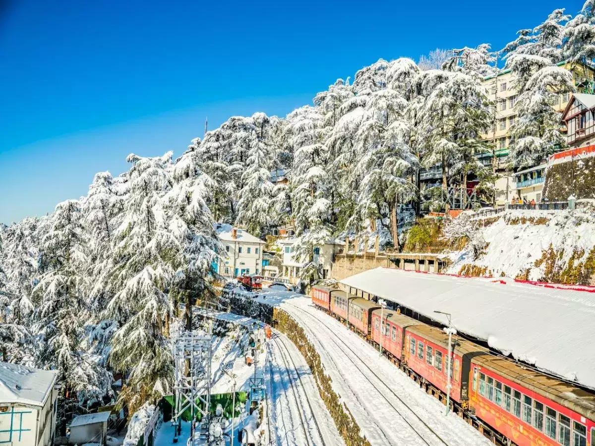

Welcome to the perfect summer getaway!
GOA
In the Heart of Goa, North Delights: Where Every Sunset Tells a Story
North Goa, a captivating region nestled along the Arabian Sea on the western coast of India, is a magnetic blend of sun-soaked beaches, vibrant culture, and rich history. Renowned for its lively atmosphere and diverse attractions, North Goa is a haven for those seeking an unforgettable tropical escape. Some of the most famous beaches in North Goa include Calangute,Baga,Anjuna, and Vagator. These beaches are known for their golden sands, water sports, beach shacks, and lively atmosphere. Calangute is often referred to as the "Queen of Beaches" and is a hub of water activities, while Anjuna is famous for its vibrant nightlife.
AnjunaBeach
Fort Aguada
DiverIsland
DonaPaula
SHIMLA

Unwind in Ooty: Where the Air is Crisp, and the Views are Priceless
Welcome to Ooty, the Queen of Hill Stations, nestled in the Nilgiri Hills of Southern India. Explore lush tea gardens, mist-covered hills, and serene lakes that define Ooty's picturesque landscape. Indulge in a perfect blend of adventure and tranquility as you traverse through charming pathways, enjoy scenic train rides, and witness the timeless beauty of botanical gardens. Experience the soothing climate, colonial charm, and warm hospitality that make Ooty an idyllic retreat for nature enthusiasts and seekers of serenity alike.
OOTY

Shimla's Charms: A Symphony of Snowflakes, and Endless Smiles
Nestled in the lap of the Himalayas, Shimla, the capital city of Himachal Pradesh in northern India, is a charming hill station that captivates visitors with its scenic beauty and colonial heritage.Shimla offers a pleasant climate and breathtaking views of the surrounding mountains.The town's main thoroughfare, Mall Road, is a bustling hub of activity, lined with shops, restaurants, and colonial-era buildings.In summary,Shimla beckons tourists with its blend of colonial charm, natural beauty, and a range of activities, making it a quintessential destination for a memorable hill station retreat.